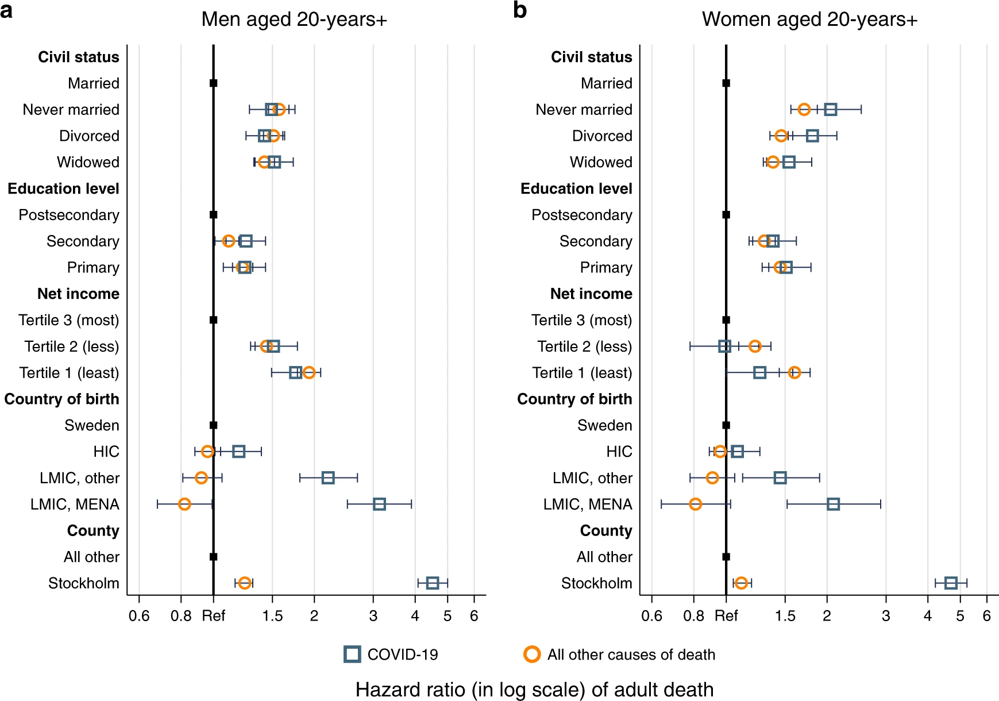

Taking vitamin D back from the racists
Black and brown people in northern countries have been disproportionately affected by Covid-19. In the US, Sweden, Canada, and the UK, racialized people have been more likely to contract the disease, more likely to have severe courses, and more likely to die from it. The explanation you usually get for this is that excess mortality is caused by systemic racism or social determinants of health. Under this explanation, there’s nothing that surprising about the high Covid mortality because it’s just another example of discriminatory health care policies. This explanation is too vague.
Both systemic racism and social determinants of health encompass a huge variety of specific social inequities, and dismantling those systems of oppression is accomplished by addressing the specific inequities more or less one at a time. Even large pieces of legislation, like the 1964 Civil Rights Act, or the Canadian Charter of Rights and Freedoms, were really just attempts to address a small portion of the problem of systemic racism. I think it’s important to talk about the specifics of racial health inequality for two main reasons.
Firstly, specific causes of racial health inequality are testable. There aren’t any countries in the world that are free from systemic racism, so it’s hard to find motivating examples of how to eliminate it completely. This matters because public policy is extremely complicated, and without real world examples, governments can often cause more harm than good. To make a change, and measure whether that change worked, we need to have a specific causal mechanism in mind.
Secondly, getting specific about social determinants of health holds people to account. White progressives like myself are often in favour of racial equality right up until the point that it costs us something. We’re in favour of school integration until we have to send our kids to school, we support housing justice until someone tries to build low-income housing in our neighborhood, and we support defunding the police unless there’s a slight increase in property crime. One of the strategies we use to resolve this cognitive dissonance is compare our small contributions to the to big, vague, intractable causes of racial inequality. We can justify sending our kids to private school because that seems like a tiny drop in the systemic racism bucket. Focusing on specific causes is a great way to hold people to account. If you know that housing discrimination is a major problem that can be ameliorated by better zoning laws, it’s worth fixing, even if it’s just a small part of the bigger systemic racism story.
People are often vague when speaking about the social determinants of health in the context of Covid-19 mortality. This is unfortunate because the more specific you are about these causes, the stranger and more concerning it becomes. A recent paper from Sweden highlights some of these puzzles.
The Swedish Puzzle
Sweden has an exceptional social science dataset. They have high quality information about income, housing, and country of origin, and are able to link that dataset with health outcomes on a national level. The researchers took this data and fit two models, one that predicted all cause mortality, and one that predicted Covid-19 mortality. These models controlled for education, net income, marital status and country of birth and found that people who were born in the Middle East or North Africa had a 2-3 fold greater risk of Covid-19 mortality than people born in Sweden. Importantly, they did not find that these groups had a higher all-cause mortality, which indicates that whatever is causing excess mortality in Sweden is different from the determinants of general health, and is not captured by income or education level.

The second part of the puzzle is that many countries in Africa have extremely low Covid-19 mortality. For example, a Kenyan seroprevalence study estimated that just one in 16,000 infected people were dying from the disease. Another from Ethiopia found that more than 7% of people in Addis Ababa had Covid antibodies at a time when only five people had died from the disease. There are probably many factors that contribute to these numbers but it seems clear that Covid is circulating in Africa, and our best estimate is that not many people are dying from the disease.
In Sweden, about six in every 1,000 people who contract Covid die from it, which is several orders of magnitude higher than Kenya or Ethiopia, and remember that Kenyans and Ethiopians in Sweden are dying at a rate three times higher than that, so the question is: What are the determinants of health which are much, much worse for Africans living in Sweden than Africans living in Africa?
I’ve heard a bunch of explanations for this trend, for example:
- Sweden is more racist than Ethiopia
- African countries have excellent pandemic responses
- African countries have fewer old people
When I try to think through the details of these explanations, none of them really make sense to me. Sure, Sweden is a racist country, but 700,000 people were displaced by ethnic conflict in Ethiopia in 2019, is the effect of that Sweden’s racism really worse? Similarly there’s a lot to admire about the coronavirus response in Africa, but most of those measures should prevent infection, not death, so why is the infection fatality rate low?
Similarly, age is an appealing explanation but when you work through the math it doesn’t add up. Let’s make the assumption that Covid didn’t affect anyone in Ethiopia under the age of 65, and that all the cases took place in the capital of Addis Ababa. There are 4.8 million people in the city and about 150,000 of them are over sixty five. If 7% of them had Covid at some point, it would imply that there were 11,000 Covid cases in elderly people. Even with these generous assumptions, this leads to an infection fatality rate of 0.45% which is a three times lower than the 1.4% IFR for people over sixty in rich countries.
When you start thinking specifically about the social determinants of health in Sweden, they make sense locally but not globally. It’s definitely true that immigrants from Africa are discriminated against in Sweden. They have fewer resources, are less likely to be hired for jobs, and receive worse medical care, but they still have access to the health care system of a rich social democracy. Africa, of course, includes some of the poorest countries in the world, and have historically been extremely vulnerable to infectious disease pandemics like HIV. In Ethiopia, 33 million people lack access to running water, 690,000 have HIV, and there are just three doctors per 100,000 people. Many of the things which we think are absolutely critical to reducing the pandemic’s death toll are just not possible in a country with Ethiopia’s resources and infrastructure. People living in extreme poverty are often unable to do things like social distance or wash their hands twenty times a day. If they are able to access a hospital they probably won’t be receiving expensive therapies. So why are they surviving this disease?
The rest of this post is going to propose an answer to this question, but I think the question is much more important than my particular answer. If Covid is a disease of poverty, why is it sparing the poorest countries in the world?
The Rickets Pattern
This isn’t the first disease that has exhibited this confusing ethnogeographic pattern. At the turn of the last century one of the biggest threats to Black children was rickets. Rickets is a bone disease caused by vitamin D availability, and it was a major contributor to the extremely high infant mortality rates in Black communities. Rickets was thought to be caused by deprivation and poverty, because it was most common among poor populations, especially among Black and Italian communities. However, when comprehensive x-ray surveys were done, researchers discovered that rickets was basically undetectable in places like Puerto Rico. Just like Covid, rickets was a disease of poverty which spared poor countries.
The treatment for rickets had actually already been discovered in 1917 by Hess and Unger. This is from an excellent masters thesis by Alison Awardy quoting the original study:
The results of this community-based study were outstanding. Hess and Unger demonstrated a dramatic improvement in rickets incidence by giving cod liver oil to 80 black infants prophylactically, feeding the children cod liver oil three times daily. More than four-fifths of the infants who took the oil for six months never developed rickets, while 15 of the 16 infants who did not take the oil showed some signs of rickets, “though all of them lived under the same conditions and many in the very same families.”
Cod liver oil is, of course, an excellent source of vitamin D, and vitamin D deficiency was the cause all along. People with dark skin in Northern countries were less efficient at manufacturing vitamin D from the sun, and so needed to take a nutritional supplement to make up the difference. In sunny territories like Puerto Rico, vitamin D deficiency was less common and therefore rickets was less of an issue.
Vitamin D deficiency is also a specific social determinant of health which fits the Swedish puzzle quite well. A Somali person who immigrated to Sweden is probably fairly similar to one who stayed in Somalia, but their risk of vitamin D deficiency is much higher because the sun is less intense in Sweden for most of the year.
The second reason to think that vitamin D is the cause of this ethnogeographic pattern is that we have a fair amount of independent evidence that vitamin D deficiency worsens Covid outcomes. There have now been 18 observational studies that have shown that vitamin D deficiency worsens Covid disease. Additionally a randomized clinical trial found that vitamin D supplementation virtually eliminated ICU admissions among elderly Covid patients. That kind of effect would go a long way to explaining why Covid has spared many parts of Africa. People can manufacture 10,000 - 20,000 IU by sitting in the intense sun for half an hour, so moving from a Swedish winter to Ethiopia is similar to taking a large vitamin D supplement. If that supplement reduces number of patients who require ICU care, that could be one of the reasons why the IFR in Ethiopia is so much lower than Sweden, and why North Africans in Sweden are so much more likely to die than white Swedes.
Just to be doubly clear here I am not proposing that vitamin D deficiency is the only explanation for these differences. The evidence is incontrovertible that things like pre-existing conditions, poverty, and access to medical care are major contributors to excess mortality among racial and ethnic minorities in wealthy countries. I am proposing that vitamin D deficiency is a contributing factor, and that it does a lot to explain why sunny countries with lots of poverty, pre-existing conditions, and lack of medical care are weathering the pandemic fairly well.
Reclaiming vitamin D from the racists
One of the things I’ve noticed while advocating for vitamin D on Twitter is that racists love vitamin D. This makes a lot of sense when you think about the history of American racism. The contradiction at the heart of the American story is that anyone can rise to the level that their talent and industry can take them unless they are prevented from doing so by their skin colour. One of the main ways to resolve this contradiction is to make race biologically relevant. If there were a scientific explanation as to why one race was oppressed, then the existence of slavery and discrimination wouldn’t undermine the American ideal. America still gets to be the land of the free, it’s just that that freedom is bound by biology.
Vitamin D fits right into this project because it’s one of the very few biological systems in which skin colour is relevant. If your skin is more melanated, it is more protected against UV damage, but also less effective at manufacturing vitamin D. This is appealing for racists because it allows them to blame racial health disparities on the biological importance of skin colour instead of social factors. If vitamin D causes Covid mortality, then society doesn’t need to do anything to resolve high death rates in Black communities because vitamin D deficiency is not caused by social factors.
One side effect of this is that progressive people have largely ceded the vitamin D corner to racists. It’s very difficult to argue that vitamin D is an important factor in progressive circles because people assume that if you think that skin colour is biologically relevant in some circumstances it should be politically relevant in all circumstances. As a result, most progressive health practitioners are very skeptical of vitamin D’s importance. This is unfortunate because vitamin D deficiency is actually a form of medical racism.
There are basically two types of discriminatory government policies: direct discrimination where a society makes unjust distinctions between protected classes; and adverse-effect discrimination where they do not reasonably accommodate differences between protected classes. A classic example of adverse-effect discrimination is failing to provide accessible entrances to a building. You’re not directly discriminating against wheelchair users because everyone is technically allowed to use the stairs, but the effect of that conduct is that people who have trouble with stairs are barred from the building.
People have different vitamin D requirements based on their skin tone. A very fair skinned person might only need 15 minutes of sunshine to manufacture enough vitamin D for the day, but someone with dark skin may need much longer than that. As a result, people are going to need to consume different amounts of vitamin D through their food to reach the same serum levels. Despite this most governments have a single RDA regardless of skin tone. They say something like, “Most people need 15 minutes of sunshine during the summer to make enough vitamin D,” and when they say “people” they tend to mean white people. Since people with dark skin tend to need higher supplementation levels than people with light skin to maintain the same serum vitamin D, a single RDA for everyone is adverse-effect discrimination.
So when I argue that vitamin D is an important factor, I’m not saying that the other social determinants of health don’t matter. I’m saying that vitamin D deficiency is a social determinant of health that matters too.
Do Black people actually need vitamin D?
I wanted to conclude by discussing a study which I get sent every time I write about this topic. The study claims that Black people have different amounts of vitamin D binding protein and so even though their serum levels of vitamin D are lower, the amount of “bioavailable” vitamin D is the same. People have read this paper to mean that Black people just don’t need the same amount of vitamin D as white people to maintain good health, and have strongly suggested that people who think vitamin D deficiency is a big health problem for Black communities are being racist.
I think this reading is problematic for a few reasons.
First, the study uses race as a proxy for genes, and we should never ever do that. Race is a social category, not a genetic one, and so we have no reason to think that a small group of Black people in Baltimore is genetically representative of Black people generally. Indeed there may not be any population anywhere that’s genetically representative of Black people generally. An American descendant of an enslaved person may have ancestors from dozens of African and European countries, and so there’s no reason at all to think that they have that much in common genetically with a recent immigrant from Ethiopia. Despite being assigned to the same racial category, their genetic risk factors may be completely different. If you want to explain something based on genetics, your study has to include actual genetic data. Race is not a good proxy.
Second, the conclusions of the study were contradicted by a later paper which found that when vitamin D binding protein was measured using a more appropriate assay, they didn’t see a difference between Black and white people.
The problem is that the monoclonal-antibody assay gives lower values in blacks who have primarily the Gc1F variant of vitamin D– binding protein. The monoclonal antibody discriminates between the Gc1F and Gc1S variants to provide artificially low values for total vitamin D–binding protein in blacks, thus bringing the conclusion of this study into question.
Third, this is an orthopedic study and doesn’t tell us anything about vitamin D’s effect on lung health. The reason they were able to conclude that vitamin D deficiency wasn’t a big deal in their population is because there wasn’t a difference in bone health. This matters because there’s no reason to think that vitamin D’s mechanism of action is the same for all biological systems. It’s possible that bound vitamin D is unavailable in orthopedic contexts, but bioavailable in respiratory contexts.
So overall I think it’s a mistake to conclude that Black people have some kind of fundamentally different vitamin D physiology due to an unarticulated genetic difference.
Conclusion
Vitamin D is, of course, not the only explanation for this important puzzle, but as far as I can tell it’s the best one we have so far. The important thing is that this puzzle could point the way to better treatments and interventions, so it really deserves an explanation. What’s yours? Be specific.